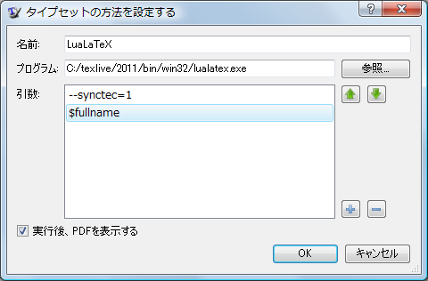
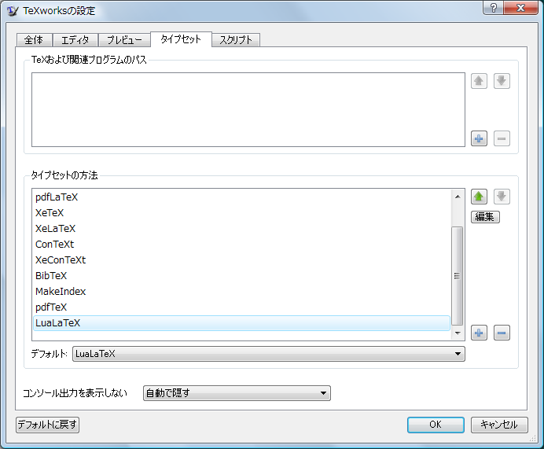

このプロジェクト (PBE-ja) 開始当初と比べ、TeX による日本語タイプセットのための敷居が下がってきています。 大きいのは、TeXworks が日本語でも実用的になってきたことだと思っています。 これは、実際に個人的に TeXworks を利用してきた感想です。
TeXworks は *TeX の GUI フロントエンドで、これを使えば TeX 原稿から PDF の該当個所へのジャンプやその逆が行えます。 つまり、赤入れの類の作業が原理的に不要になり、翻訳者自らが簡易的なタイプセットを行えるようになります。
ただ、TeXworks と組み合わせて使える *TeX は、-synctex オプションを理解する必要があります。 この条件を pTeX は満たしていませんでした。 これは、つい最近まで、TeXworks では日本語は実用にならないということを意味しました。 実用になる日本語 *TeX は、その時点では pTeX だけだったからです。
LuaTeX-ja は、LuaTeX でも実用レベルの日本語タイプセットができることを目指して、今も有志によって開発が続けられているパッケージです。 LuaTeX-ja が Google にひっかかるようになってきたのは、おそらく PBE-ja の発足より後です。 LuaTeX は -synctex オプションを理解するので、TeXworks が日本語で実用にならない問題が、たぶん解決されます。 また LuaTeX-ja には、PBE-ja の過程で発見されていた listings パッケージの不具合をフィードバックしてあり、修正もしてもらってあります。
http://www.tug.org/texlive/acquire-netinstall.html
最新の TeXLive には、LuaTeX もちろん LuaTeX-ja も含まれます。 ネットワークインストールしてください。 国内のミラーが選択されるはずです。 光ネクストで 30 分くらいかかりました。 もし回線が細くてネットワークインストールできない人がいたらメディアの郵送を検討します。 DVD イメージをダウンロードしてオフラインインストールという手も過去にはあったのですが、結局ネット経由でアップデートしなければならず、今ではあまり意味がありません。
また本当は Windows の場合、TeXLive でなく W32TeX という選択肢もあって、こちらの方が短時間でインストールできるのですが、今のところ堀内はこの方法で日本語版 PBE のタイプセットに成功していません。
注意点は特にありません。
PBE は、章ごとに個別にタイプセットできるようになっています。 他の章への参照などが未解決になりますが、我慢してください。
Collections\Collections.tex をタイプセットする場合は、
C:\PharoByExample-japanese>cd Collections C:\PharoByExample-japanese\Collections>lualatex Collections.tex
とします。同じディレクトリに Collecions.pdf ができます。
C:\PharoByExample-japanese>lualatex PBE1.tex
とします。同じディレクトリに PBE1.pdf ができます。時間がかかります。
何tex をどういう引数で呼ぶか、設定する必要があります。
編集 → 設定 → タイプセット → タイプセットの方法: → +
とします。


lualatex の起動と同様にすると良いでしょう。
TeXworks にも TeX エディターは付属しますが、使い慣れたもので編集したい場合もあるでしょう。 TeXworks のエディターは、対象ファイルの更新をリアルタイムで監視しているようです。
正しくはその非公式パッチ: jlisting の不具合です。jlisting にしても pTeX にしても既にメンテナンスされなくなっており、不具合をフィードバックすることができません。問題はそこにあります。